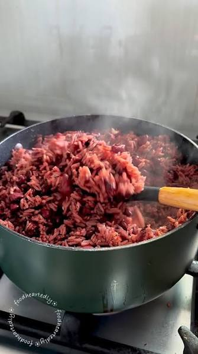
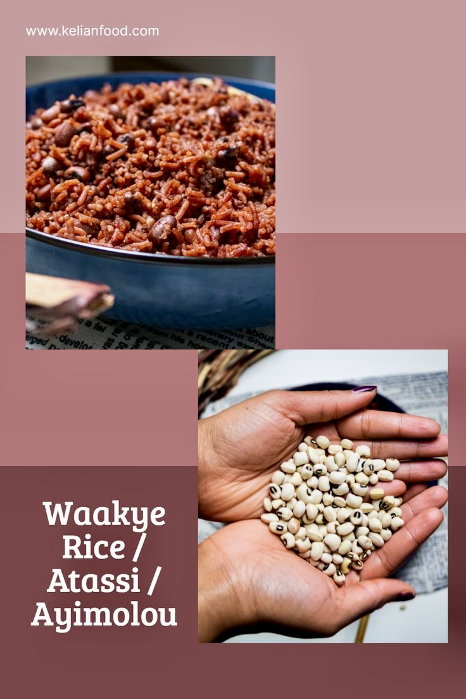

A humble bowl of rice and beans that evolved into one of Ghana's most celebrated national dishes — discover the heritage, culture, and craftsmanship.
Waakye (pronounced "wah-chay") is a staple Ghanaian dish of rice and black-eyed peas cooked together until soft and aromatic. Traditionally enjoyed for breakfast or lunch, it serves as an iconic street food across the nation.
Its distinctive deep brown-red shade comes from simmering the grains with dried sorghum leaf sheaves (mbrehyie) and a pinch of natural potash, infusing subtle earthy undertones into every bite.
Originating from the Dagbani language in northern Ghana, the term refers to the particular species of beans used in traditional recipes.


First created by the Mole-Dagbon people of Northern Ghana, waakye began as a practical household dish long before becoming a urban favorite in Accra and Kumasi.
Traders and workers brought waakye to southern urban Zongo communities, where roadside vendors popularized the dish and built iconic culinary legacies.
Today, waakye transcends region, ethnicity, and religion, standing as a culinary symbol of unity across Ghana.
A daily staple cooked over open fires using natural sorghum stalks for distinct coloring.
Traders established waakye within vibrant urban communities, creating a beloved street food market.
Vendors wrapped dishes in plantain leaves with customized sides, giving rise to local food legends.
Featured in modern kitchens like Gen Z Waakye — served with elevated proteins, gourmet toppings, and fresh ingredients.
Black-eyed peas provide clean, high-fiber plant proteins for tissue repair and strength.
Complex carbs from whole grains deliver low-GI energy to keep you energized all day.
Naturally high in dietary fiber to support gut performance and heart health.
Pair with lean protein and fresh greens for an optimal macronutrient breakdown.